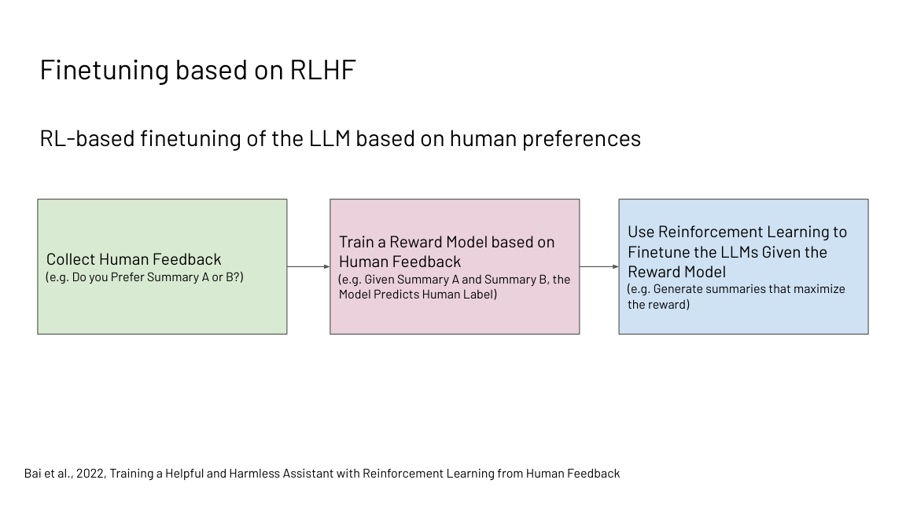
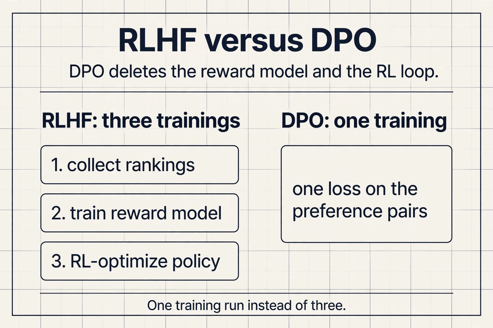
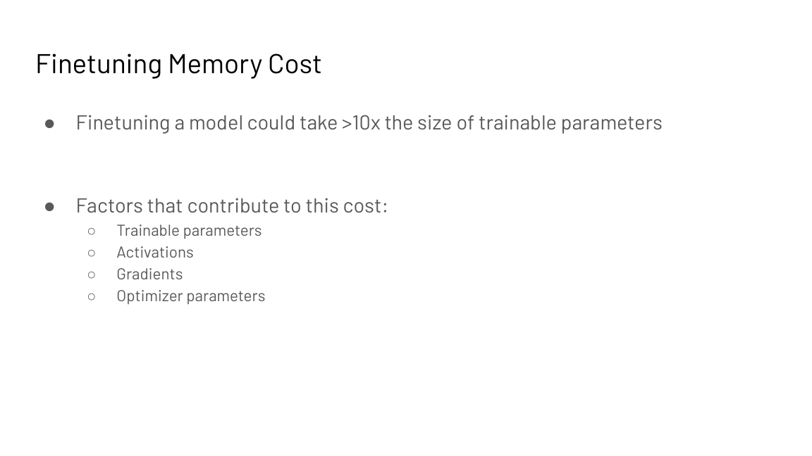
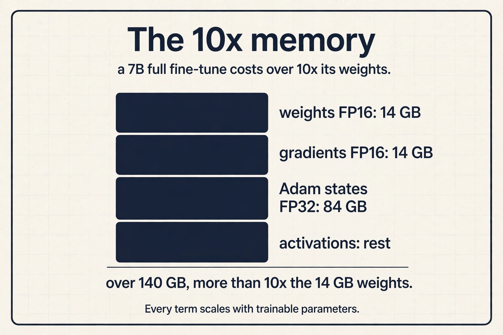
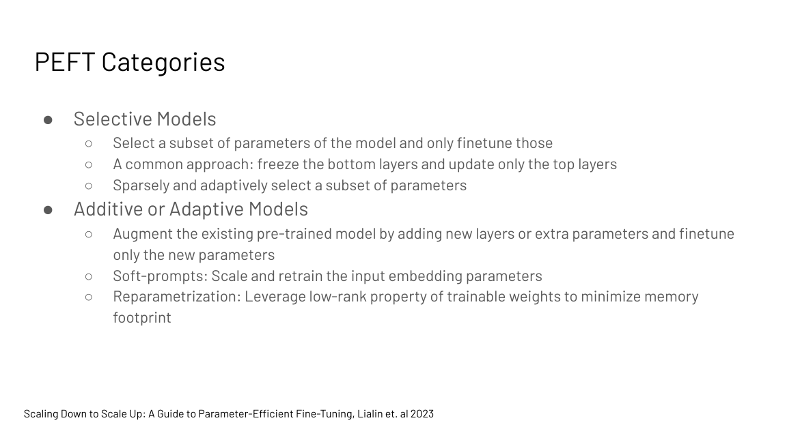
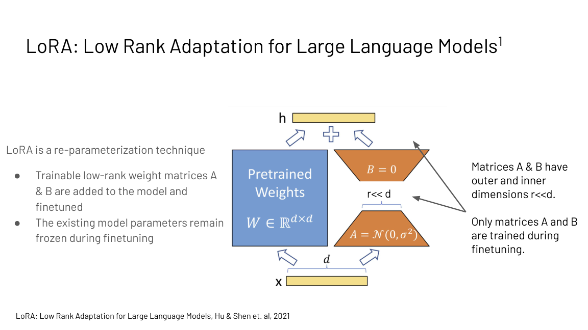
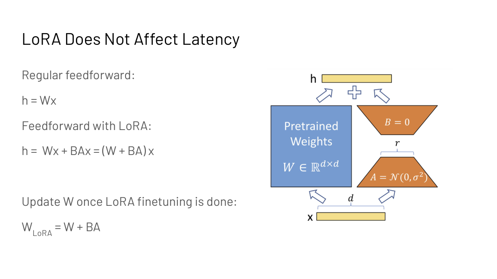
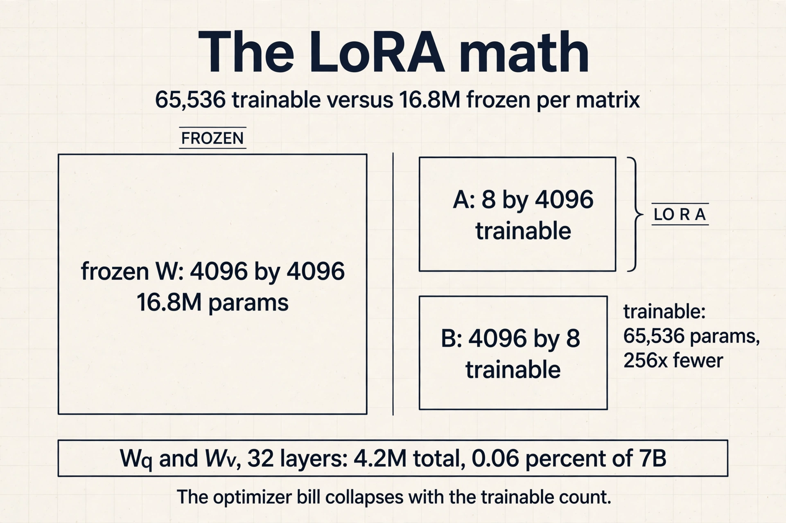
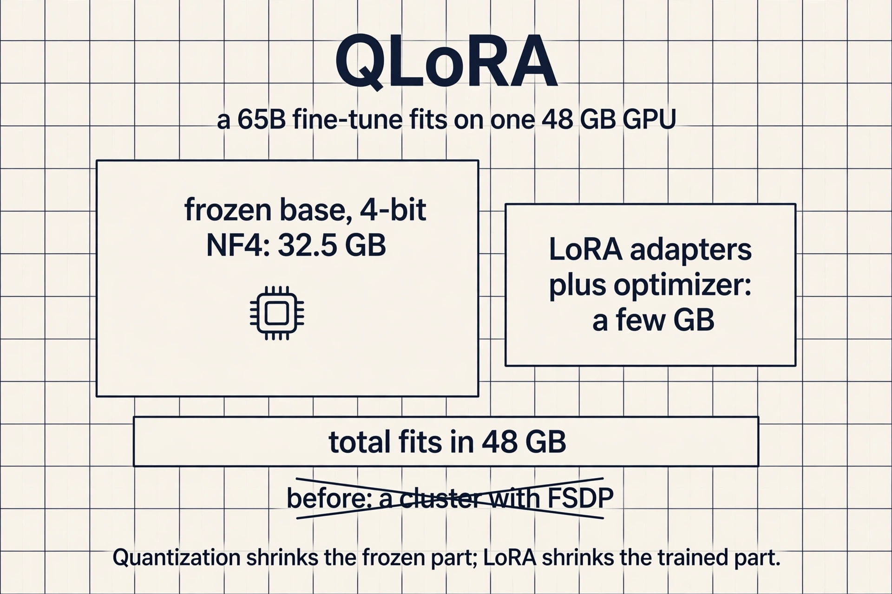
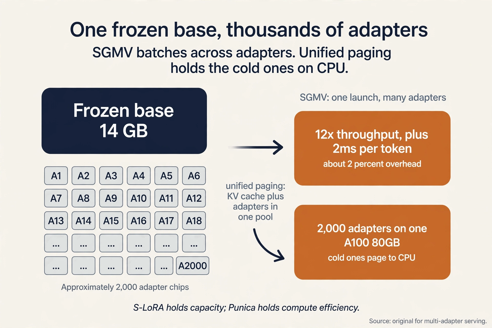

Lecture 8: Fine-Tuning Large Language Models and PEFT
Coverage and sourcing
This lesson follows the CS229S “Fine-tuning Large Language Models” slide deck (Fall 2024 offering, Fall 2023 headers), taught by Azalia Mirhoseini. The deck’s arc runs: the base-model vs assistant gap, instruction tuning, RLHF in three steps, Constitutional AI and RLAIF, the 10x fine-tuning memory cost, and the PEFT taxonomy (selective, additive, reparametrization) with soft prompts, LLaMA-Adapter, and LoRA worked in full. The lesson adds the post-deck history, each fact dated: DPO (2023), QLoRA (2023), Punica and S-LoRA multi-adapter serving (2023-2024), and the 2025-2026 post-training shift to the modular stack (SFT, supervised fine-tuning, preference optimization, RLVR with GRPO), with October 2026 updates throughout. CS229 L15 covers LoRA from the modeling side (full fine-tune vs LoRA, the adaptation decision). This lesson covers it from the systems side: the memory math, the merge property, and serving many adapters on one base model.
The problem: a brilliant parrot
A pretrained language model has read the internet. Ask it “Translate cheese from English to French” and it may reply with “Translate cheese from English to Spanish” and “Translate cheese from French to English”: more examples in the same pattern. It completes text. It does not follow instructions. A fine-tuned model answers: the French word for cheese is “fromage”.
That gap is the whole lecture. Pretraining teaches next-token prediction on vast text. Fine-tuning updates the weights so the model follows instructions and aligns with human intent. Every commercial assistant is extensively fine-tuned this way.
The systems question hides inside the behavior story. Pretraining runs once, on a cluster, for months. Fine-tuning runs constantly: per task, per customer, per deployment. If each fine-tune costs nearly as much as pretraining, only the richest labs can adapt models. The lecture’s second half is about making adaptation cheap.
First attempt: instruction tuning
The direct fix is supervised. Take the pretrained model and fine-tune it on collections of tasks. The scale contrast is the point: pretraining runs on up to trillions of tokens. Instruction tuning runs on up to millions. A million is a rounding error next to a trillion: the tuning budget is roughly a millionth of the pretraining budget. The tuned model gains zero-shot and few-shot performance and becomes more useful, harmless, and truthful.
Zero-shot means the model handles a task it never saw in training, from the instruction alone. Few-shot means it sees a handful of examples in the prompt. Both work only after instruction tuning teaches the model the general shape of “follow the instruction.”
Instruction data comes from three sources. Human workers write question answering, style transfer, recommendation, summarization, and rule-based examples. Templates turn existing labeled data into instruction format: a sentiment dataset becomes “Classify the sentiment of …”. And an already instruction-tuned AI generates more data: synthetic instructions at machine speed. Fine-tuning quality rises with the number of tasks, the model size, and chain-of-thought instructions in the mix (Chung et al., 2022).
Public recipes as of 2026: Google’s FLAN collection and Allen AI’s Tulu datasets are the open instruction-tuning standards. Tulu 3 (November 2024) is also where RLVR was named as a post-training method. The datasets are public. The exact vendor mixes are not.
| Model | Prompt “Translate cheese to French” | Behavior |
|---|---|---|
| Base (pretrained) | Continues with more examples | Completes the text |
| Instruction-tuned | Answers: “fromage” | Follows the instruction |
Subchapter: the forgetting tax
Fine-tuning on new data erodes old capabilities: the model learns the task format and forgets pretraining knowledge it no longer rehearses. As you learned in CS229 L15, the SFT (supervised fine-tuning) stage prices this forgetting tax explicitly. The systems mitigation is the same one this lecture builds toward: train fewer parameters, and the frozen majority keeps what it knew. Instruction tuning on the full model pays the tax. PEFT mostly does not.
The key question
Instruction tuning is supervised: it teaches from demonstrations. But demonstrations are expensive, and some goals (be safe, be helpful) are easier to judge than to demonstrate. Can we align the model from preferences instead?
RLHF in three steps
Reinforcement learning from human feedback rewards the model for useful and safe samples and optimizes the reward directly. Three steps:

- Collect human preferences. Humans rank model outputs by usefulness, harmfulness, and truthfulness (Stiennon et al., 2020). The key trick (Christiano et al., 2017): train on preferences, not demonstrations. Ranking two summaries is far cheaper than writing one, and they needed labels on under 1% of interactions.
- Train a reward model. A model that predicts the human label: given summaries A and B, which would a human prefer? The Bradley-Terry loss turns each ranking into a probability: the preferred response should score higher.
- RL-fine-tune the LLM. Generate samples that maximize the reward model’s score, with a KL penalty keeping the policy near the original model so it does not drift into reward-hacking gibberish. PPO (proximal policy optimization) is the classic optimizer: it also trains a value model (a critic) that predicts expected reward, which doubles the models in memory.
RLHF drastically improves scaling on summarization and on code tasks (Bai et al., 2022). But it is not itself scalable: human labels are costly and slow, and optimizing against human raters can produce evasive responses that trade helpfulness for harmlessness.
Subchapter: the four-model memory bill
Count what PPO-based RLHF holds in memory: the policy being trained, the frozen reference policy (for the KL penalty), the reward model, and the value model. Four models, plus each one’s optimizer state. This is why RLHF is a cluster job twice over: the behavior needs the labels, and the systems need the memory. Every method below deletes at least one of these four.
Subchapter: DPO, the RLHF shortcut
RLHF trains a reward model and then runs RL against it: two models, one unstable optimizer. DPO (direct preference optimization, Rafailov et al., 2023) deletes both. The preference pairs train the policy directly: increase the likelihood of the preferred response relative to the rejected one, with a KL penalty to the reference model folded into the loss.
Same inputs (human rankings), one training run, no reward model, no RL. Open instruction-tuned models widely adopted it (Zephyr and its successors are public examples). The price: DPO inherits the preference data’s limits, and very long RL-style exploration is outside its reach. For the common case (align a chat model on rankings), it is the default answer as of 2026.

The key question, again
RLHF replaced demonstrations with rankings, but humans are still in the loop for every label. Can we drop the humans entirely?
Constitutional AI: labels to principles
Constitutional AI (Bai et al., 2022, used in Claude) replaces tens of thousands of human labels with about ten human-written principles: a constitution describing desired behavior. Humans write the constitution. AI does the rest.
Phase 1, supervised learning. The model critiques its own responses against the constitution (“identify specific ways this response is harmful, unethical, racist, sexist, toxic, dangerous, or illegal”) and revises them (“rewrite the response to remove any and all harmful content”). Fine-tune on the revisions. Harmlessness rises with more revisions while helpfulness dips. The sum of the two improves monotonically.
Phase 2, RLAIF (reinforcement learning from AI feedback). Train a preference model on the phase-1 model’s responses judged against the constitution, then RL-fine-tune the LLM to maximize that AI preference model. No humans in the loop.
Why AI feedback can beat human feedback: higher-quality supervision (AI already surpasses humans in games, chip floorplanning, and diagnostics imaging), more transparency (the constitution is inspectable), scalability (AI labels in parallel), and cost. On the scaling plots it matches or beats RLHF for helpfulness and harmlessness, especially with chain-of-thought judging.
The full development flow: pretrain unsupervised, prompt (zero/few-shot, chain-of-thought), instruction-tune supervised, RLHF or RLAIF, evaluate on downstream tasks.
What changed since 2024: the modular stack
The 2024 lecture ends at RLHF vs RLAIF. By October 2026 the field had settled on a modular post-training stack, and the trend is unmistakable: away from PPO plus a learned reward model, toward DPO-family methods for general alignment and verifiable-reward RL for reasoning.
Preference optimization generalized DPO. SimPO, KTO, and ORPO keep DPO’s shape (one loss on preference pairs, no reward model, no RL) and change the details: SimPO drops the reference model, KTO learns from unpaired good/bad examples, ORPO folds the preference loss into the SFT stage itself. The family trades the RL machinery for a stable supervised run. Bounded by the pairs, but cheap and reliable.
RLVR (reinforcement learning with verifiable rewards) handles reasoning. Where correctness can be checked by a program (math answers, unit tests, symbolic solvers), the reward comes from the verifier, not from a human or a learned model. Tulu 3 named it in November 2024. DeepSeek-R1-Zero (January 2025) showed pure RLVR could produce reasoning: GRPO on the base model with rule-based rewards, no supervised fine-tuning first.
GRPO (group relative policy optimization) is the optimizer that made RLVR cheap. Introduced in DeepSeekMath (February 2024), it samples a group of responses per prompt and computes advantages by comparing within the group. PPO’s learned value model, the critic, is gone: the group baseline replaces it. One fewer model in memory, and the systems win is direct: the four-model bill from the subchapter above loses the critic.
The 2026 stack in one line: SFT for instruction following, preference optimization (DPO/SimPO/KTO) for alignment, RL with verifiable rewards (GRPO, and its open successor DAPO: decoupled clip and dynamic sampling policy optimization, which adds dynamic sampling to GRPO’s group baseline) for reasoning. Human labels survive where reward is irreducibly fuzzy. Everywhere checkable, the verifier replaced the rater.
Subchapter: the systems shape of modern RL
Online RL samples responses during training: the policy generates rollouts, the verifier scores them, the update follows. Generation during training is serving: the 2026 RL frameworks (TRL, verl, OpenRLHF) run vLLM inside the training loop to produce rollouts fast. The inference engine from L04/L06 became a training component. The interview point: post-training systems and serving systems converged. The same kernels serve users by day and generate RL rollouts by night.
The key question, once more: what does fine-tuning cost?
The behavior story is done. Now the systems story, because fine-tuning at LLM scale is a systems problem twice over.
Cost. Fine-tuning memory can exceed 10x the trainable parameters. Four contributors: the parameters themselves, the activations, the gradients, and the optimizer state (Adam keeps fp32 copies, momentum, and variance). A 7B model at full fine-tune needs far more than 14 GB.

Subchapter: the 10x, worked on a 7B model
Weights in FP16: 14 GB. Gradients in FP16: another 14 GB. Adam keeps three FP32 states per parameter: a master copy of the weights (28 GB), momentum (28 GB), variance (28 GB). Subtotal: 112 GB, already 8x the weights. Add activations for the backward pass: past 140 GB, over 10x.
This is why full fine-tuning is a cluster job and PEFT is a laptop job. Every term in the sum is proportional to the trainable parameter count, so training 0.06 percent of the parameters (LoRA below) divides the whole bill.

Subchapter: the three classical relief valves
Before PEFT, three systems tricks attacked the same sum.
Activation checkpointing deletes the activations term and recomputes it. As you learned in CS229S L03, the workload is memory bound, so recompute is cheap. The trade: store checkpoints every sqrt(n) layers, recompute the segments between them. Memory falls from O(n) to O(sqrt(n)) layer-activations. Time rises about 30%.
Gradient accumulation splits the batch into micro-batches, accumulating gradients without updating. Activation memory falls with the micro-batch size. The trade: more forward-backward passes per update, and the optimizer state never shrinks.
Sharding (L10) partitions the optimizer state and gradients across GPUs: ZeRO-1 and ZeRO-2, or FSDP. The trade: communication. None of the three changes the trainable count. PEFT does.
Deployability. A separate full-size model per task is prohibitive to store and serve. Ten tasks means ten models. Fifty tasks means fifty 14 GB copies: 700 GB for fifty 7B variants. The storage scales with tasks, not with the base model.
Can we adapt the model without touching all its weights?
Parameter-efficient fine-tuning
PEFT fine-tunes a small number of parameters instead of all of them. Cost falls, the base model’s capabilities stay intact (less forgetting), and per-task artifacts shrink to megabytes.

The taxonomy (Lialin et al., 2023) has three families. Selective methods tune a subset of existing parameters: freeze the bottom layers, update only the top layers, or select sparsely and adaptively. Additive or adaptive methods add new parameters and tune only those. Hybrid methods combine the above. Each family below is built from zero, then consolidated.
Soft prompts: train the input
The idea is small. Prompt tuning (Lester et al., 2021) prepends m tunable tokens to the input embeddings. Each prompt token has a learnable embedding. The base model stays frozen. The tuned parameters are a single m by e matrix, where e is the embedding size. Backprop trains only the soft prompt:
P_theta_p(Y | p1, ..., pm, x1, ..., xt)
theta_p : m x e matrix (m prompt tokens, e embedding size)
Work the size. m = 100 prompt tokens, e = 4096: 409,600 parameters. Against 7B: 0.006 percent. Model tuning trains one full model per task. Prompt tuning trains one tiny prompt per task on one frozen model. P-Tuning v2 extends prompts to deeper layers with reparametrization, matching fine-tuning across scales on many tasks.
The price: soft prompts work best at large scale (Lester et al., 2021). Small models lack the capacity to steer with so few parameters. The method’s cost is nearly zero, and so is its capacity.
LLaMA-Adapter prepends trainable prompts with zero-init gating. The attention scores split into adapter and text parts, and a learnable gate g starting at zero scales the adapter’s contribution up gradually. The model starts from its pretrained behavior and absorbs instructions over training instead of being shocked by them on step one.
LoRA: train the update
The trick is algebraic. LoRA (Hu et al., 2021) adds trainable low-rank matrices A and B to a frozen weight, with inner dimension r much smaller than d. This is reparametrization: only A and B train.

The forward pass: h = Wx + BAx = (W + BA)x. After fine-tuning, merge once: W_LoRA = W + BA. Merged, inference is exactly one matmul: LoRA adds zero latency. Per task, swap in that task’s (A, B) pair. The base model never changes.

Subchapter: the LoRA parameter math, worked
One attention matrix at d = 4096: W has 4096^2 = 16.8M parameters. LoRA with r = 8 trains A (8 by 4096) and B (4096 by 8): 2 x 4096 x 8 = 65,536 parameters. Ratio: 16.8M / 65,536 = 256x fewer per matrix.
Apply to Wq and Wv across 32 layers: 32 x 2 x 65,536 = 4.2M trainable parameters. Against 7B: 0.06 percent. The optimizer states, gradients, and activations all scale with the trainable count, so the 10x memory bill from the last section collapses to megabytes.

Subchapter: the merge property, and why it matters for serving
Compare LoRA with adapters that do not merge. A bottleneck adapter inserts extra layers: every request pays the extra matmuls forever. LoRA’s update is linear in the weights, so it folds into W exactly once, before serving starts. The served model is indistinguishable from a fully fine-tuned model in latency and in math.
This is why the serving story below works: the base model stays frozen and shared, each task’s adapter is a small (A, B) pair, and merging is optional per request. Unmerged adapters cost a small per-request matmul. Merged adapters cost nothing. The choice is per deployment, not per method.
Subchapter: LoRA variants, the systems-relevant ones
AdaLoRA allocates the rank budget adaptively: more rank to important layers, less to unimportant ones, pruning singular values during training. Same merge property, better rank efficiency. The systems win: equal quality at lower total rank, so smaller adapters.
DoRA decomposes the update into magnitude and direction: train a magnitude vector plus a directional LoRA. Closer to full fine-tuning behavior on hard tasks, still merges into W. The systems price: slightly more trainable parameters than LoRA at the same rank.
Both keep what makes LoRA a systems trick: frozen base, tiny trainable count, zero-latency merge.
Subchapter: QLoRA, the memory answer
LoRA shrinks the trainable count, but the frozen base still sits in FP16: 14 GB for 7B, 130 GB for 65B. QLoRA (Dettmers et al., 2023) quantizes the frozen base to 4-bit (NF4, a 4-bit float shaped for the normal distribution of weights) and trains LoRA adapters on top. The base is read in 4-bit and dequantized on the fly. Gradients flow only into the adapters.
Two more memory tricks inside. Double quantization quantizes the quantization constants themselves: the per-block scales get their own smaller scales. Paged optimizers spill optimizer state to CPU memory when a spike would OOM the GPU, paging it back as needed: the same virtual-memory idea as OS paging, applied to Adam.
The worked result: a 65B model in 4-bit is 32.5 GB. Add LoRA adapters and their optimizer states: the full fine-tune fits on one 48 GB GPU. Before QLoRA that run needed a cluster with FSDP.

Applied to transformers, LoRA targets the self-attention weights. Wq and Wv work best empirically. Rank r is tuned per task, and small r suffices for many tasks.
Serving many adapters: one base, thousands of tasks
Training cheap is half the story. Serving is the other half. Fifty tasks as fifty merged models costs 700 GB and fifty deployments. The systems answer: serve one frozen base model and swap adapters per request.
The naive version fails. Batching assumes every request uses the same weights: Y = X @ W. With per-request adapters, request i needs Y_i = X_i @ (W + B_i A_i). Different A_i, B_i per request breaks the batched GEMM (general matrix multiply: one dense matrix-matrix product).
Punica (Chen et al., 2023) fixed the kernel. The SGMV (segmented gather matrix-vector) kernel gathers each request’s adapter weights and runs the low-rank multiplication in one launch. One GPU holds a single copy of the base model and serves many LoRA models: 12x higher throughput than the serving systems of 2023, adding 2ms latency per token. The LoRA computation (rank 8 to 64) is tiny next to the base model’s matmuls, so the overhead is about 2%.
S-LoRA (Sheng et al., 2023) fixed the memory. Its unified paging puts KV cache and adapter weights in one memory pool, so thousands of adapters share the GPU with the requests they serve. Custom Triton kernels handle prefill with variable ranks and non-contiguous memory. A modified BGMV (batched gather matrix-vector) kernel handles decode. Result: 2,000 adapters on a single A100 80GB at 7.6+ requests per second, 30x the throughput of HuggingFace PEFT. Adapters the GPU cannot hold page to CPU memory: the adapter weights are small enough (10-50 MB) that the PCIe transfer is negligible next to inference latency.
Work the capacity. Fifty adapters at 40 MB each: 2 GB. The base model is 14 GB. One GPU holds the base, all fifty adapters, and the KV cache with room to spare. Two thousand adapters at 40 MB: 80 GB, which is why S-LoRA pages the cold ones to CPU.
Compressed Multi-LoRA (2024) shrinks the adapters themselves: joint diagonalization factorizes each adapter’s B_i A_i into U Sigma_i V^T with U and V shared across all adapters. Per-adapter parameters fall from 2dr to r: with U and V shared, only the r singular values stay per adapter. 1.6x throughput, 99%+ quality kept, integrated into vLLM.
Production as of October 2026: vLLM serves multiple
adapters concurrently (--enable-lora,
--max-loras), with LRU eviction when GPU memory fills
and a dynamic load/unload API for multi-tenant
deployments. SGLang serves LoRA adapters too. The
interview one-liner: the base model is the expensive
thing, adapters are megabytes, and the kernels batch
across adapters so one GPU serves thousands of tasks.

Subchapter: the adapter design rules
Three rules for production adapter serving. One: keep adapters small (rank 8-16) unless the task proves it needs more. Adapter size is PCIe transfer time and GPU residency. Two: pin hot adapters in GPU memory and page the rest. LRU matches real traffic skew. Three: batch across adapters with SGMV-class kernels, never serialize per adapter. Serialization deletes continuous batching (grouping live requests into shared GPU work instead of serving them one at a time). The systems win of PEFT is only realized if serving batches across tasks.
What is used where: real post-training
Post-training is how every assistant is made. Facts as of October 2026.
| Step | Public examples | Status |
|---|---|---|
| Instruction tuning | FLAN (Google), Tulu (Allen AI) | public datasets and recipes |
| RLHF | OpenAI’s methodology posts, Anthropic’s 2022 papers | public methodology; vendor internals not public |
| RLAIF / Constitutional AI | Anthropic’s Claude (Bai et al., 2022) | public papers |
| DPO family | Zephyr and open successors; SimPO, KTO, ORPO | public |
| GRPO / RLVR | DeepSeek-R1-Zero, Tulu 3; TRL, verl, OpenRLHF frameworks | public |
| LoRA / QLoRA | HuggingFace PEFT library | public; the default open stack |
| Multi-LoRA serving | vLLM (--enable-lora), SGLang; Punica, S-LoRA papers |
public |
| Distilled reasoning | DeepSeek-R1 into Qwen2.5 and Llama 3 | public in the R1 report |
Which exact recipe GPT-6 or Gemini 4 uses is not public. The shapes (preferences, reward or DPO, verifiable-reward RL for reasoning, adapters for serving) are industry standard. The details are proprietary.
Mapping back: each cost gets its answer
| Fine-tuning pain | PEFT answer |
|---|---|
| Memory over 10x the weights | Train almost nothing: prompts are m by e, LoRA is rank r |
| One full model per task | One frozen base plus tiny per-task adapters, batched across tasks by SGMV |
| Forgetting the base capabilities | Frozen weights keep pretrained knowledge intact |
| Inference slowdown from adapters | LoRA merges into the weights: zero added latency |
| RLHF’s four-model memory bill | DPO deletes reward model and RL; GRPO deletes the critic |
The honest price
PEFT trades capacity for cost: a rank-r update cannot express everything full fine-tuning can, and r must be tuned per task. Soft prompts work best at large scale (Lester et al., 2021). Constitutional AI’s harmlessness gains cost some helpfulness per revision, even as the sum improves. DPO is bounded by its preference pairs: it cannot explore beyond them. RLVR needs a verifier: where correctness cannot be checked by a program, the reward model or the human stays. And none of this replaces the data: instruction tuning still needs millions of quality tokens, however they are sourced.
Coverage map: every lecture claim and where it lives
| Lecture claim | Covered in | File line |
|---|---|---|
| Base model completes; tuned model answers (cheese test) | The problem: a brilliant parrot | L67 |
| Instruction tuning: trillions vs millions of tokens; zero/few-shot gains | First attempt: instruction tuning | L90 |
| Instruction data: human workers, templates, AI-generated | First attempt: instruction tuning | L90 |
| Quality rises with tasks, size, chain-of-thought (Chung et al.) | First attempt: instruction tuning | L90 |
| FLAN, Tulu as public recipes (Oct 2026 update) | First attempt: instruction tuning | L90 |
| Forgetting tax; PEFT mitigates via frozen weights (CS229 L15 link) | the forgetting tax | L130 |
| RLHF three steps: preferences, reward model, RL fine-tune | RLHF in three steps | L150 |
| Christiano trick: preferences cheaper; under 1% labeled | RLHF in three steps | L150 |
| RLHF not scalable: label cost, evasive responses | RLHF in three steps | L150 |
| PPO four-model memory bill: policy, reference, reward, value | the four-model memory bill | L184 |
| DPO: one loss on pairs, no reward model, no RL | DPO, the RLHF shortcut | L194 |
| Constitutional AI: ten principles replace labels; self-critique plus revision | Constitutional AI: labels to principles | L220 |
| RLAIF: AI preference model drives RL; no humans | Constitutional AI: labels to principles | L220 |
| Full flow: pretrain, prompt, instruction-tune, RLHF/RLAIF, evaluate | Constitutional AI: labels to principles | L220 |
| Modular stack 2024-2026: SFT, DPO family, RLVR/GRPO (Oct 2026 update) | What changed since 2024: the modular stack | L256 |
| GRPO drops the critic; SimPO/KTO/ORPO variants | What changed since 2024: the modular stack | L256 |
| vLLM inside the RL training loop; serving meets training | the systems shape of modern RL | L300 |
| Fine-tuning memory over 10x: weights, activations, grads, Adam state | The key question, once more | L312 |
| 7B worked: 14+14+84+activations, past 140 GB | the 10x, worked on a 7B model | L326 |
| Checkpointing, accumulation, sharding as relief valves | the three classical relief valves | L341 |
| Deployability: 50 tasks as 50 models is 700 GB | The key question, once more | L312 |
| PEFT taxonomy: selective, additive/adaptive, hybrid (Lialin et al.) | Parameter-efficient fine-tuning | L371 |
| Prompt tuning: m x e matrix; 100 x 4096 = 409,600 params | Soft prompts: train the input | L388 |
| P-Tuning v2 deeper layers; LLaMA-Adapter zero-init gating | Soft prompts: train the input | L388 |
| LoRA: freeze W, train A and B; h = Wx + BAx; merge to zero latency | LoRA: train the update | L422 |
| LoRA math: 65,536 per matrix, 256x fewer; 4.2M total, 0.06% | the LoRA parameter math, worked | L439 |
| Merge property vs bottleneck adapters; per-deployment choice | the merge property, and why it matters for serving | L454 |
| AdaLoRA rank allocation; DoRA magnitude plus direction | LoRA variants, the systems-relevant ones | L470 |
| QLoRA: NF4 base, double quantization, paged optimizers; 65B on 48 GB | QLoRA, the memory answer | L487 |
| Punica SGMV: 12x throughput, +2ms/token, 2% overhead | Serving many adapters | L515 |
| S-LoRA unified paging: 2,000 adapters, 7.6+ req/s, 30x PEFT | Serving many adapters | L515 |
| 50 adapters at 40 MB: 2 GB vs 700 GB | Serving many adapters | L515 |
| Compressed Multi-LoRA: from 2dr to r, 1.6x, in vLLM | Serving many adapters | L515 |
| vLLM –enable-lora/–max-loras, LRU, load/unload API; SGLang (Oct 2026) | Serving many adapters | L515 |
| Adapter design rules: small rank, pin hot, batch across | the adapter design rules | L577 |
| Post-training table: FLAN/Tulu, RLHF, CAI, DPO, GRPO, PEFT, vLLM, R1 (Oct 2026) | What is used where | L591 |
| Each cost mapped to its PEFT answer | Mapping back | L612 |
| Honest price: capacity vs cost; DPO bounded by pairs; RLVR needs verifier | The honest price | L622 |
RLHF trains a reward model on human preference rankings, then RL-optimizes the LLM against it. It works but needs costly human labels. Constitutional AI replaces the labels with a short human-written constitution: the model critiques and revises its own outputs against the principles, then a preference model trained on AI judgments drives the RL step. Same three-stage shape, AI feedback instead of human feedback. For the four reasons the lesson states: higher-quality supervision (AI already surpasses humans in games, chip floorplanning, and diagnostics imaging), more transparency (the constitution is inspectable), scalability (AI labels in parallel), and cost.
Because the adapter merges into the weights. During training the layer computes h = Wx + BAx, but after fine-tuning you add BA into W once: W_LoRA = W + BA. Inference then runs a single matmul with the merged weight, exactly as fast as the original model. The adapter exists only at training and storage time. Full fine-tuning stores 50 copies of 14 GB: 700 GB. LoRA stores one 14 GB base plus 50 adapters of a few megabytes each: roughly 14 GB total. Serving can also batch requests across tasks on the shared base and swap adapters per request, which is what Punica’s SGMV kernel and S-LoRA’s unified paging implement.
Preferences are cheaper than demonstrations. Ranking two summaries costs far less than writing one, and the reward model generalizes the rankings to new outputs. They needed labels on under 1% of interactions. The reward model becomes a cheap, always-available stand-in for the human judge. The RL step optimizes the reward model’s score, not true human preference. Flaws in the reward model become the policy’s exploits: the classic failure is evasive responses that score high on harmlessness while being unhelpful. This is the “not scalable” critique the lecture levels at RLHF.
Trainable prompt tokens are prepended to the input, and their attention scores are scaled by a learnable gate g initialized to zero. Early in training the adapter contributes nothing, so the model behaves exactly as pretrained. g grows gradually and the instructions phase in. It avoids shocking the frozen model with random prompt embeddings on step one. Plain prompt tuning trains only the prepended embeddings at the input layer. LLaMA-Adapter adds the gating mechanism so the pretrained behavior is preserved at initialization, and P-Tuning v2 extends prompts to deeper layers with reparametrization. All three keep the base model frozen.
RLHF runs three trainings: collect human rankings, train a reward model on the rankings, then RL-optimize the policy against the reward model. DPO runs one: feed the same preference pairs into a single loss that raises the preferred response’s likelihood relative to the rejected one, with the KL penalty to the reference model inside the loss. The reward model never exists. The RL loop never runs. You lose RL’s long-horizon exploration, but for aligning a chat model on rankings, one stable supervised run beats a three-stage unstable one. When the reward is not a static preference dataset: online settings where the reward model keeps learning from new interactions, or tasks needing extended trial-and-error that a single supervised loss cannot express. DPO is offline preference learning. RLHF with an evolving reward model is online.
Per matrix: 2 x 4096 x 16 = 131,072. Four matrices per layer: 524,288. Times 32 layers: 16.8M trainable parameters. Against 7B that is 0.24 percent. The paper’s Wq-and-Wv-only recipe at r = 8 was 4.2M (0.06 percent). Doubling the rank and covering all four matrices quadruples it. The interview habit: 2 x d x r per matrix, times matrices, times layers. Sometimes, on harder tasks, but with diminishing returns: the paper found Wq and Wv best on its tasks. More matrices means more capacity and more memory. Tune r and the target set per task. The rank budget is the knob.
S-LoRA’s unified paging puts KV cache and adapter weights in one memory pool, so adapters share the GPU with the requests they serve and page to CPU when cold: 2,000 adapters on one A100 80GB at 7.6+ req/s, 30x HuggingFace PEFT. Punica’s SGMV kernel solves the batching problem: one kernel launch processes requests targeting different adapters, so continuous batching works across tasks. S-LoRA handles memory capacity (more adapters than fit). Punica handles compute efficiency (heterogeneous batching). Production systems use both ideas. Yes, with rank-aware batching: S-LoRA’s Triton prefill kernels handle variable ranks and non-contiguous memory, and the scheduler groups by rank where it helps. Mixed-rank batching is a solved scheduling problem, not a blocker.
Full fine-tuning first needs the memory math: 140 GB of FP16 weights, 140 GB of gradients, 840 GB of Adam states, plus activations: over 1 TB. Even 8x80GB (640 GB) cannot hold it without sharding, so full fine-tuning means FSDP or ZeRO-3 across the node (Lecture 10). PEFT changes the job: QLoRA puts the 70B base in 4-bit (35 GB) and trains adapters, fitting on one or two GPUs. The design answer: full fine-tuning for maximum quality when you own the cluster and the data. QLoRA when you want the adaptation this week on hardware you have. Most open fine-tunes choose QLoRA. Often not. A rank-r update has limited capacity: it steers existing capabilities well but struggles to install new ones. New capabilities want more trainable parameters: higher rank, more target modules, or full fine-tuning. Match the capacity to the ambition: the lesson’s rule is to tune r per task.
Recap: the whole lesson on one screen
The story in ten steps. Each step answers the one before it.
- Base models complete. Assistants follow. Pretraining teaches next-token prediction. The cheese test: the base model continues the pattern, the tuned model answers.
- Instruction tuning teaches following. Fine-tune on task collections: trillions of pretraining tokens, millions of tuning tokens. Better zero/few-shot, usefulness, harmlessness, truthfulness.
- RLHF: preferences, reward, optimize. Humans rank outputs. A reward model learns the ranking. RL maximizes the reward. Preferences beat demonstrations: under 1% labeled. PPO holds four models in memory.
- RLHF is not scalable. Human labels are costly and slow. Optimizing against raters breeds evasive responses.
- Constitutional AI swaps labels for principles. Ten human principles replace ten thousand labels. Self-critique plus revisions, then RLAIF. Scalable, inspectable, cheap.
- Since 2024: the modular stack. SFT, then DPO-family preference optimization, then RLVR with GRPO for reasoning. Each step deleted an expensive component: the reward model, the RL loop, the critic, the human.
- Fine-tuning costs over 10x the weights. Parameters plus activations plus gradients plus optimizer state. Checkpointing, accumulation, and sharding relieve it. And one full model per task is undeployable.
- PEFT tunes almost nothing. Selective (subset of weights), additive (soft prompts, adapters), reparametrization (low-rank). Or hybrids.
- LoRA merges and disappears. Train A and B with r much smaller than d. Merge into W after. Zero inference latency. QLoRA adds a 4-bit base: 65B on one 48 GB GPU. One base, many adapters.
- Serving batches across adapters. Punica’s SGMV kernel batches requests on different adapters. S-LoRA pages 2,000 adapters through one GPU. Adapters are megabytes. The base is the expensive thing.
Go deeper
- LoRA Explained: low-rank adaptation from zero: https://www.youtube.com/watch?v=t509sv5MT0w
- Visual Guide to LoRA: https://www.youtube.com/watch?v=dA-NhCtrrVE
- LoRA and QLoRA fine-tuning walkthrough: https://www.youtube.com/watch?v=lixMONUAjfs
- LoRA (Hu et al., 2021): https://arxiv.org/abs/2106.09685
- DPO: Direct Preference Optimization: https://arxiv.org/abs/2305.18290
- QLoRA: Efficient Fine-tuning of Quantized LLMs: https://arxiv.org/abs/2305.14314
- Punica: Multi-Tenant LoRA Serving: https://arxiv.org/abs/2310.18547
- S-LoRA: Serving Thousands of Concurrent LoRA Adapters: https://arxiv.org/abs/2311.03285
- The Power of Scale for Parameter-Efficient Prompt Tuning: https://arxiv.org/abs/2104.08691
Official sources and further reading
Official: - Fine-tuning Large Language Models slide deck (Fall 2023 headers).
Further reading: - Bai et al., “Training a Helpful and Harmless Assistant with RLHF” (2022). - Bai et al., “Constitutional AI: Harmlessness from AI Feedback” (2022). - Hu et al., “LoRA” (2021). - Dettmers et al., “QLoRA” (2023). - Lester et al., “The Power of Scale for Parameter- Efficient Prompt Tuning” (2021). - Lialin et al., “Scaling Down to Scale Up” (2023): the PEFT survey behind the taxonomy.
Caveats from these sources. The “10x” fine-tuning memory figure is an order-of-magnitude rule. Exact ratios depend on optimizer, precision, and activation checkpointing. LoRA’s “Wq and Wv best” is empirical on the paper’s tasks. Constitutional AI’s scaling plots compare specific model sizes. The harmlessness-helpfulness tradeoff shape is the finding that holds. Post-2024 developments (DPO family, GRPO, RLVR) are dated in the text. Vendor internals remain proprietary.
Connections to the other courses
- CS336 L15: post-training: instruction tuning and RLHF derived in full.
- CS329H: preference pairs: the alignment object, defined there and reused in RLHF.
- CS229S L07: quantization as an orthogonal shrink for fine-tuned models.
- CS229S L10: FSDP and ZeRO: the distributed-systems answer to the same memory tax.
- CS229 L15: LoRA from the modeling side: full fine-tune vs LoRA, the adaptation decision.
- CS229 L17: RL for LLMs: GRPO and RLVR in full.
Sources
- SLIDESFine-tuning Large Language Models slide deck (Fall 2023 headers)
- PAPERBai et al., Training a Helpful and Harmless Assistant with RLHF (2022)
- PAPERBai et al., Constitutional AI: Harmlessness from AI Feedback (2022)
- PAPERHu et al., LoRA: Low-Rank Adaptation of Large Language Models (2021)
- PAPERLester et al., The Power of Scale for Parameter-Efficient Prompt Tuning (2021)
- PAPERRafailov et al., Direct Preference Optimization (2023)
- PAPERDettmers et al., QLoRA: Efficient Finetuning of Quantized LLMs (2023)
- PAPERChen et al., Punica: Multi-Tenant LoRA Serving (2023)
- PAPERSheng et al., S-LoRA: Serving Thousands of Concurrent LoRA Adapters (2023)
- PAPERLialin et al., Scaling Down to Scale Up: A Guide to Parameter-Efficient Fine-Tuning (2023)